Tây Tạng — Potala
Tổng mặt bằng

Hồng Cung (lầu 10 tầng)
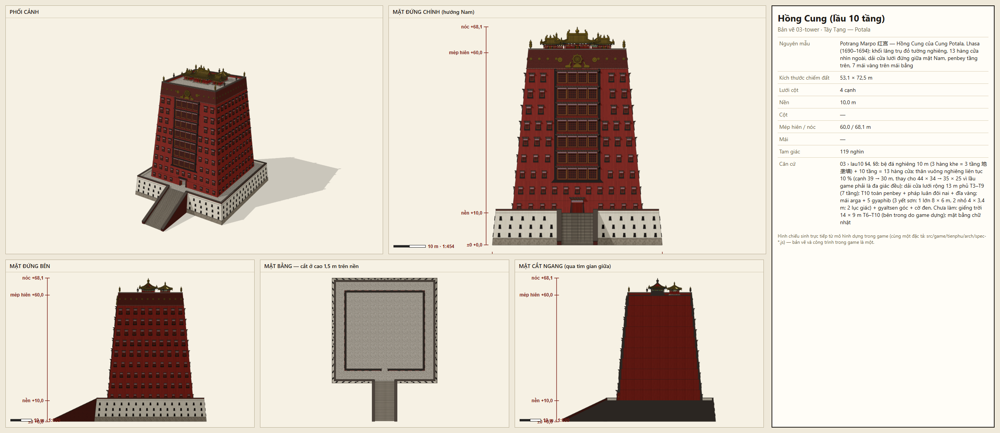
Bạch Cung (Potrang Karpo)
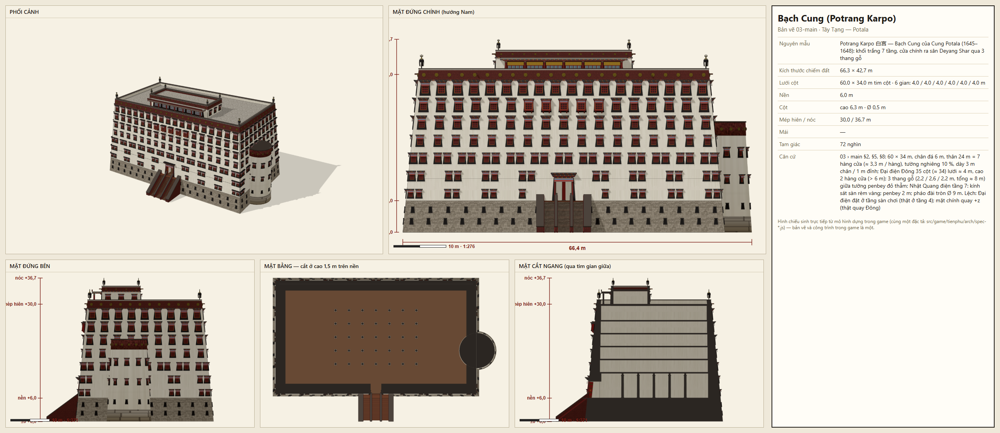
Ấn Kinh Viện (Shöl Parkhang)
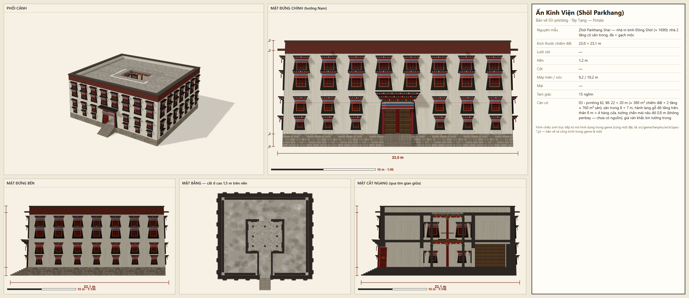
Shöl Lekhung
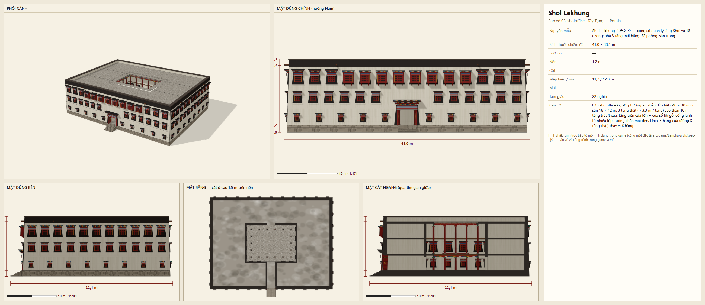
Nhà Dân Shöl
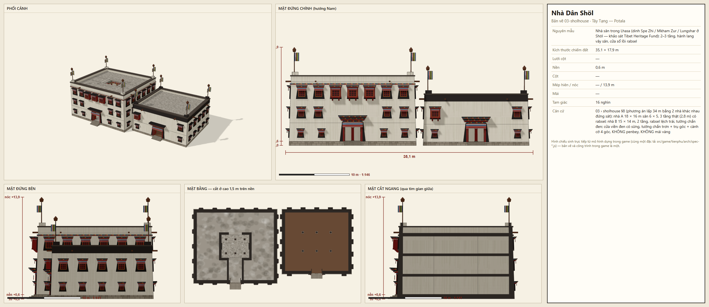
Tăng Học Viện (Tse Lobdra)
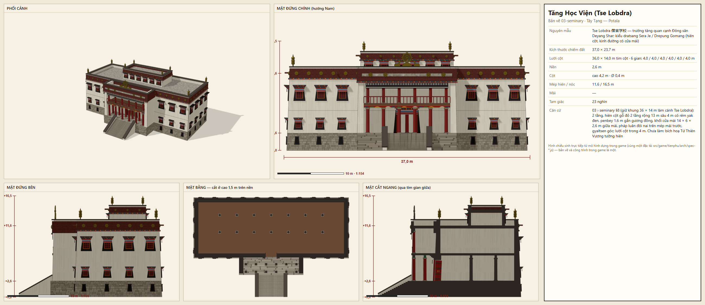
Tăng Phòng Đông
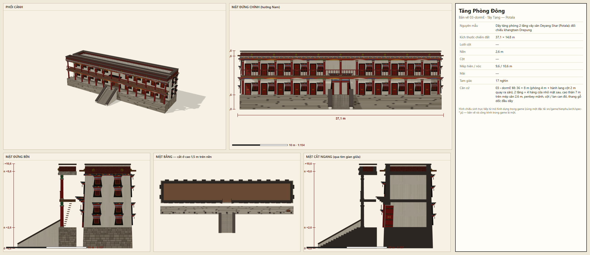
Zhasha (Tăng Xá)
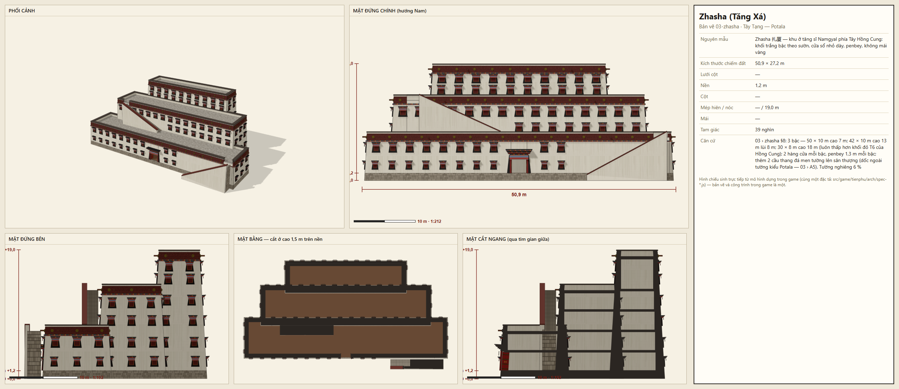
Lukhang (điện Long Vương)
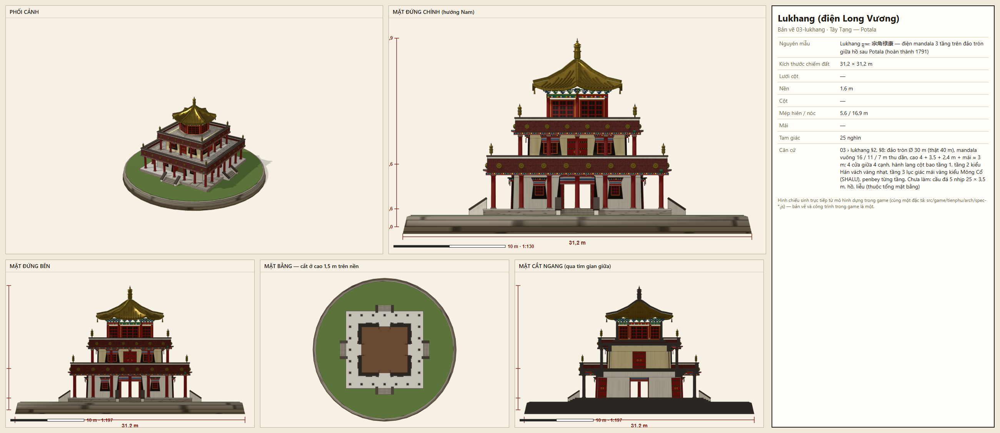
Vọng Sơn Đình
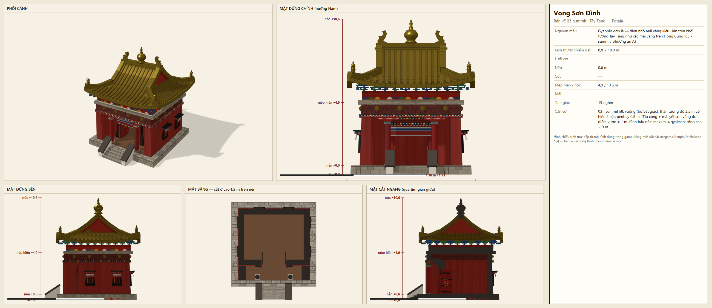
Đài Deyang Shar
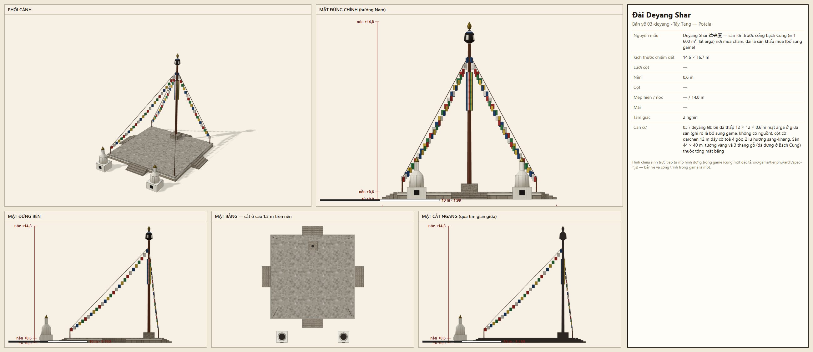
Môn Lâu Shöl
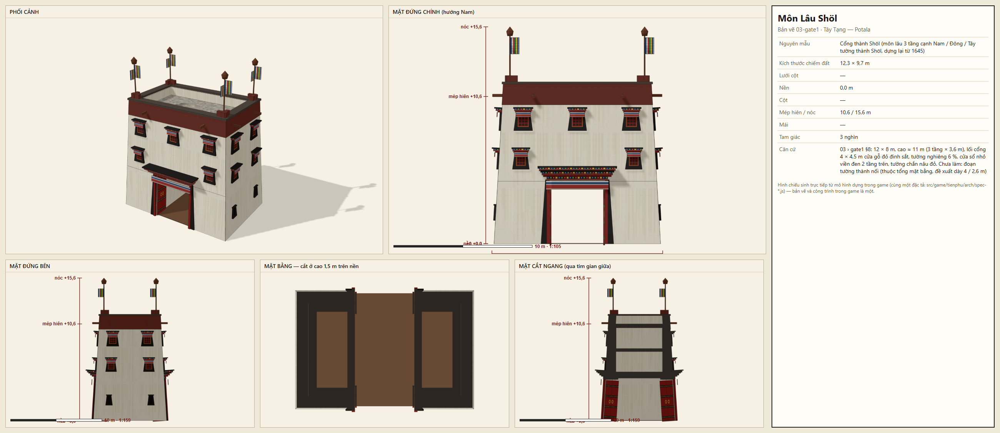
Đình Lưng Dốc (Pargo Kaling)
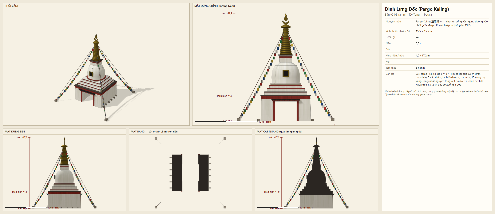
Đình Ven Hồ
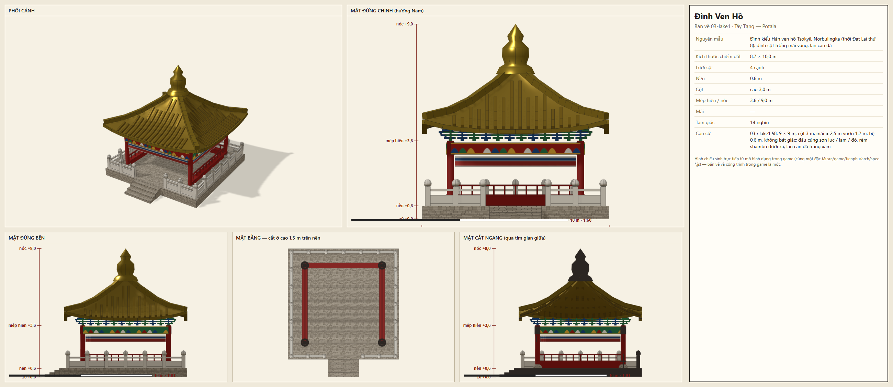
Đình Liễu
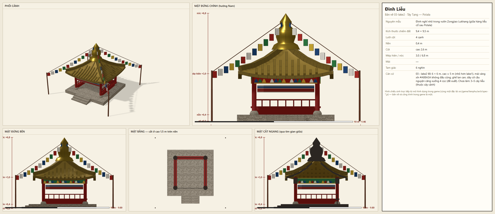
Đình Kinh Luân (Mani Lhakhang)
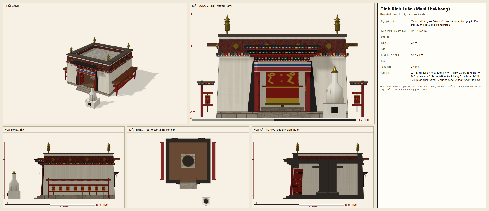
Hồ Tâm Đình
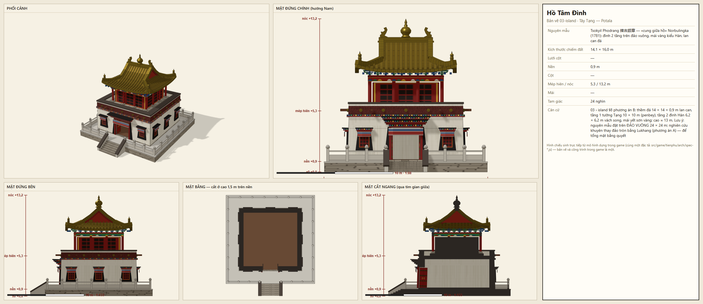